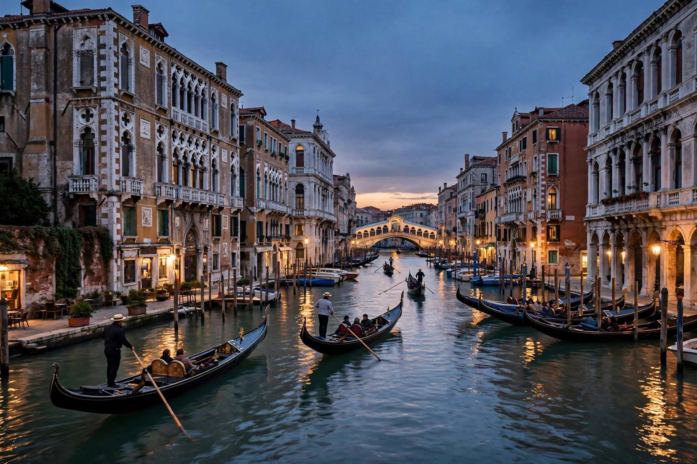

Venice (Italian: Venezia) is a city in northeastern Italy and the capital of the Veneto region. Built on a group of 126 islands in the shallow Venetian Lagoon of the Adriatic Sea, separated by canals and linked by more than 400 bridges, the city has no roads — transport is by boat and on foot. Venice was for over a thousand years the capital of the maritime Republic of Venice, a great trading and naval power, and remains world-famous for its architecture, art and Carnival. The historic centre's population has fallen below 50,000, even as the city receives tens of millions of visitors a year.

| Venice | |
|---|---|
| Country | Italy |
| Region | Veneto |
| Founded | Traditionally 25 March 421 |
| Elevation | 1 m (3 ft) |
| Population (metropolitan) | ~640,000 |
| Historic centre pop. | ~50,000 (falling) |
| UNESCO | World Heritage Site since 1987 |
According to tradition, refugees fleeing barbarian invasions of the Italian mainland founded settlements on the lagoon's mudflats in the 5th century. Ruled by an elected Doge from 697, Venice grew rich on trade between Western Europe and the Byzantine and Islamic worlds — salt, slaves, spices and silk. The Republic of Venice ("La Serenissima") built a maritime empire across the Adriatic and eastern Mediterranean, profited enormously from the Fourth Crusade's sack of Constantinople in 1204, and fought prolonged wars with Genoa and the Ottoman Empire. Decline followed the opening of Atlantic trade routes after 1498; Napoleon ended the Republic in 1797. Venice passed to Austria, joined unified Italy in 1866, and industrialised its mainland borough of Mestre in the 20th century.
The city's core is St Mark's Square with the Byzantine St Mark's Basilica, the Doge's Palace and the Campanile. The Grand Canal is lined with Gothic and Renaissance palaces, crossed famously by the Rialto Bridge. Venetian art — Bellini, Giorgione, Titian, Tintoretto, Veronese, Canaletto — fills its churches and the Accademia gallery. The Venice Biennale (founded 1895) and the Venice Film Festival (1932, the world's oldest) anchor its modern cultural calendar, while the February Carnival revives the tradition of masked balls.
Venice is sinking by subsidence and threatened by rising seas; periodic high waters (acqua alta) flood its squares, catastrophically in 1966 and 2019. The MOSE system of mobile sea barriers, first raised in October 2020, now protects the lagoon from the highest tides. Mass tourism and depopulation of the historic centre are continuing political issues, and the city introduced a day-tripper entry fee in 2024.
Republic of Venice · Grand Canal · Doge's Palace · Venice Biennale · MOSE
From Wikipedia, the free encyclopedia.